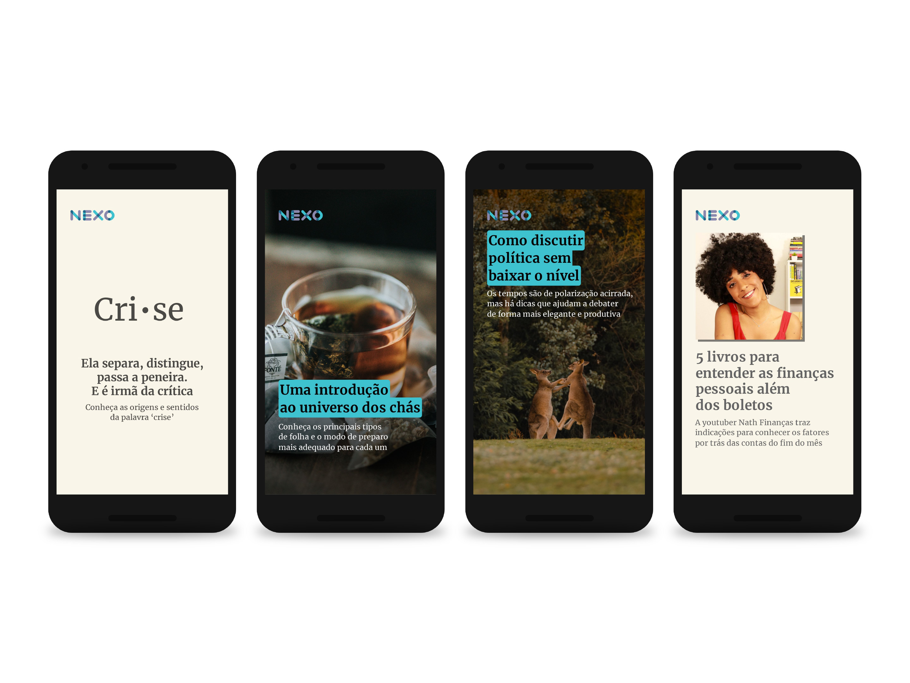
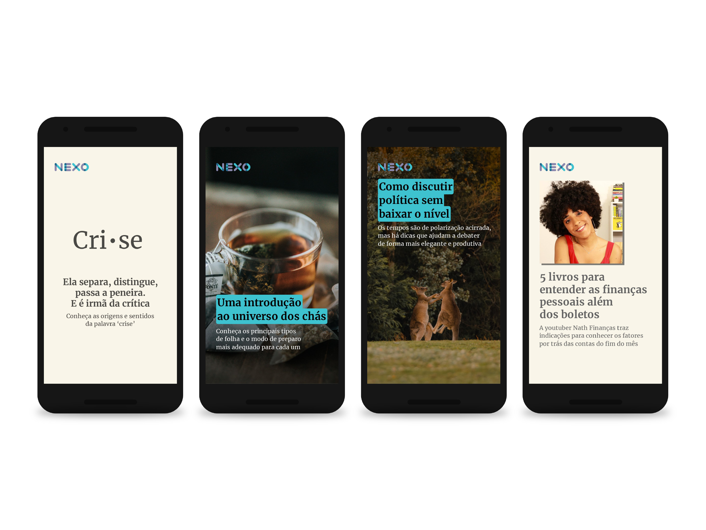

politiquês — a politics podcast
nexo jornal — 2017-2019
Politiquês is a podcast by Nexo Jornal to talk about politics — not about its facts, but about its ideas, concepts and definitions. Each episode deals with an essential theme to understand what politics is, after all — whether in its institutionalized form, or in the daily lives of citizens.
Each week brought a challenge: how to illustrate without being obvious, arousing the listener's curiosity and making the image not only an accompaniment to the text, but a question in itself.
I developed the visual identity and produced most of the images that illustrate each episode.
Illustration for the episode "Democracy in Brazil and in the world: concepts, advances and threats"
This project was developed using Adobe Illustrator and Adobe Photoshop, under the direction of Guilherme Falcão and Conrado Corsalette